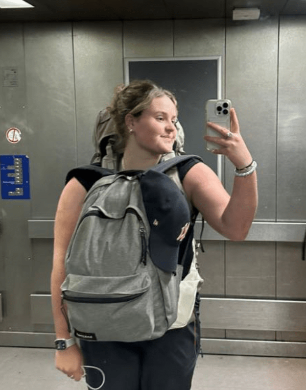
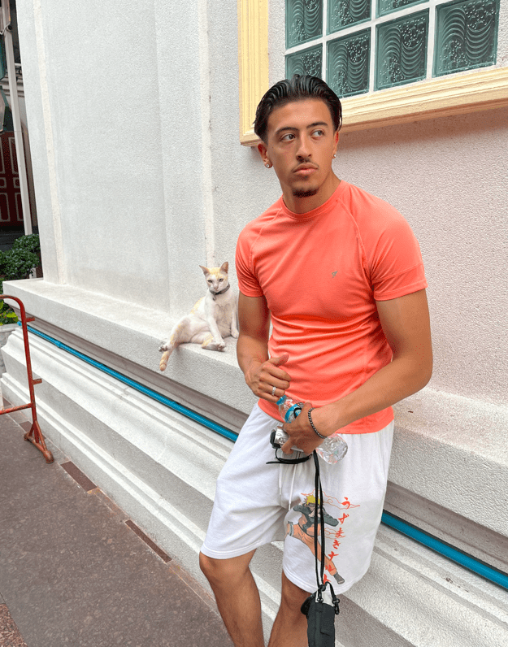
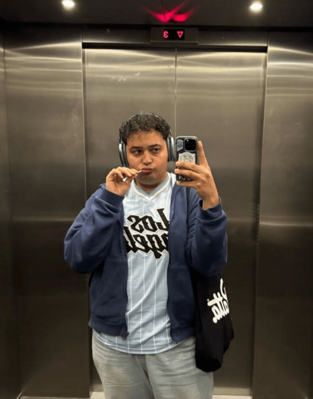

ANNE

''Hey, ik ben Anne, ben 18 jaar en kom uit Den Haag. Ik ben vaak te
vinden met oortjes in om muziek te luisteren.''
KEVIN

''fakka broski. ik ben kevin, een van de hosts. ik hou me dagelijks
bezig met kickbox, gym en kijken hoe ik het ga maken in deze
wereld.
Ik kom van een zuid-amerikaanse achtergrond. wat heeft dit te maken
met mij jou advies geven? helemaal niks.
dus ik zou zeggen check ons podcast en stuur je vragen/problemen op
waarmee je zit en wij gooien een takkie terug op je.''
MO

''Heyyy y'all! It's the one and only Mootchile! Maar noem me gewoon
Mo.
Ik ben 23 en ik woon in Amsterdam. Ik hou van gamen en ik luister
graag naar muziek.
Luister dan! Is er ergens drama? IK BEN DAAR! Bespreek alles met ons
en wij zijn er voor je. We gaan je gekke advies geven (maar meer
opstoken je weet zelf).''